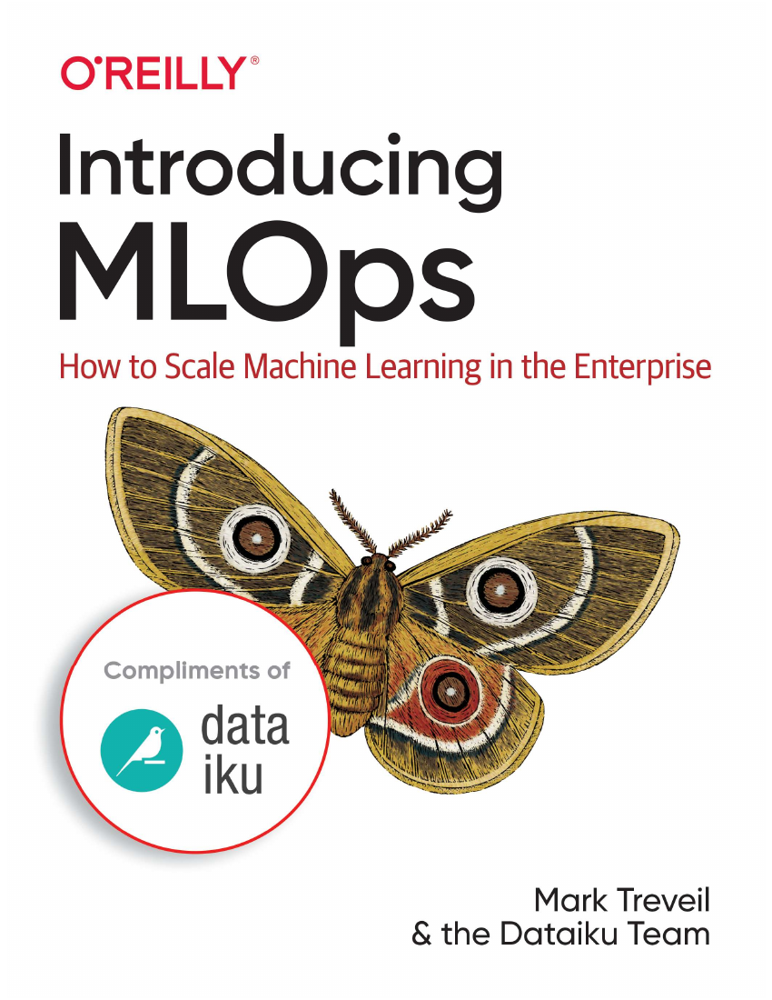
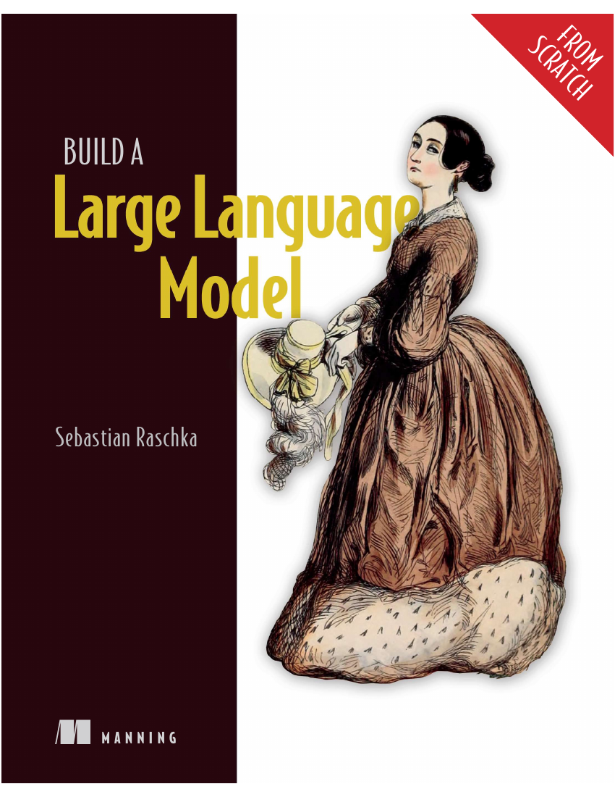

Konkur 367 · Sharif
Aerospace gave me a strong engineering start, but I realized my real motivation was not military-oriented systems. I wanted to build intelligent software.
My education path is not a straight certificate list. It starts with a high-pressure engineering entrance, moves through Python and computer science, grows into machine learning and deep learning, and now points toward NLP, LLMs, RAG, agents, and deployable AI products.
I ranked 367 in Konkur and entered Aerospace Engineering at Sharif University. That gave me a serious engineering foundation, but I realized my motivation was not in building military-oriented systems. I wanted to build intelligent software — systems that learn, reason, assist, and can become real products.
Around five years ago, a friend suggested Jadi’s beginner Python course on Maktabkhooneh. That small suggestion became the beginning of my AI story. I continued with Advanced Python, studied programming more deeply, then moved into Andrew Ng’s Machine Learning Specialization and practiced regression, logistic regression, SVC, decision trees, random forests, XGBoost, CatBoost, and LightGBM.
Deep Learning Specialization was the turning point. It moved me into neural networks, optimization, CNNs, sequence models, attention, and Transformers. After that, I selected TensorFlow as a practical base, studied CS50 to strengthen software engineering, used Kaggle for real datasets, learned PyTorch through Raschka’s book, and studied MLOps to connect models with deployment.
Hover, move, and click to zoom. This section is designed like a premium evidence wall, not a plain document list.
Aerospace gave me a strong engineering start, but I realized my real motivation was not military-oriented systems. I wanted to build intelligent software.
A friend suggested Jadi’s beginner Python course on Maktabkhooneh, and that became the first real spark of my AI story.
Andrew Ng’s Machine Learning Specialization gave me regression, classification, trees, ensembles, unsupervised learning, recommender systems, and reinforcement learning.
The Deep Learning Specialization moved me into neural networks, optimization, CNNs, sequence models, attention, and Transformers.
TensorFlow became my practical DL framework; CS50 then pushed me deeper into C, web, SQL, algorithms, and software engineering.
Kaggle practice, PyTorch study, and MLOps pushed me from model training into deployable systems: notebooks, real datasets, APIs, Docker, databases, cloud hosting, experiment tracking, and production-minded workflow design.
Now I am moving deeper into Transformers, Hugging Face, LLMs from scratch, RAG, and AI agents.
The next direction is clear: master modern NLP, build and understand LLMs from scratch, work deeply with Hugging Face, then move toward production GenAI systems with retrieval, tool use, agents, evaluation, and deployment.
Each card opens a dedicated learning page. The selected milestone-rich courses also connect to project pages with implementation details, media, and results.
This was the first real programming doorway in my path. Before machine learning models and cloud deployments, I needed a language that let me think, experiment, break problems into smaller parts, and write small useful programs. Jadi’s beginner Python course gave me that starting point.
After the beginner course, I wanted to become more comfortable writing Python beyond simple scripts. Advanced Python helped me organize code better, understand more language features, and move toward larger programming exercises.
This course was important because it focused less on memorizing syntax and more on understanding how programmers think. It helped me connect the act of coding with problem decomposition and algorithmic reasoning.
After finishing the TensorFlow track, I realized that my goal was not only to train models. I wanted to build software around models. CS50 became the step where I expanded from Python-only AI work into computer science and software engineering.
The foundation layer: supervised learning, neural networks, trees, unsupervised learning, recommenders, and reinforcement learning.
This course gave me the first rigorous ML foundation. It made regression and classification feel mathematical and practical at the same time: choose a hypothesis, define a cost, optimize parameters, evaluate behavior.
This course moved me from simple supervised models into more powerful learning algorithms. It connected neural network intuition with tree-based methods and practical ML development decisions.
This was the most milestone-rich part of the Machine Learning Specialization for my page because it opened three important directions: discovering structure without labels, building recommender systems, and learning from reward feedback.
The specialization that turned deep learning into my main AI direction: neural nets, optimization, project strategy, CNNs, sequence models, attention, and Transformers.
This course was the real beginning of my deep learning path. It explained neural networks from the inside: parameters, activations, forward propagation, gradients, vectorization, and how deeper models build intermediate representations.
This course taught me how to make neural networks train better. It moved the focus from “can I build a network?” to “can I debug, optimize, regularize, and make training reliable?”
This course was short but important because it taught project decision-making. In real ML work, knowing what to try next is often more valuable than trying random architectures.
This course built my computer vision foundation. It started from convolution and pooling, then moved into modern CNN architectures, residual networks, object detection, segmentation, face recognition, and style transfer.
Sequence Models shifted my focus from images to language, audio, and time-dependent data. It connected RNNs and LSTMs to attention and finally to Transformers, which became the bridge toward my current NLP/LLM direction.
The practical framework layer: Keras pipelines, image datasets, transfer learning, CNNs, text vectorization, embeddings, and sequence models in TensorFlow.
After the theoretical deep learning foundation, I selected TensorFlow as one of my main practical libraries. This course turned the math and architecture ideas into Keras training pipelines.
This course strengthened computer vision in TensorFlow. It focused on practical image classification workflows: binary classification, transfer learning, multi-class classification, augmentation, and evaluation.
This course gave me a practical TensorFlow NLP layer before moving deeper into Transformers. It covered text vectorization, embeddings, recurrent models, convolutional sequence models, and classification tasks.
This course gave me a broad conceptual map of generative AI. It was not a deep implementation course, but it helped organize what GenAI can do across modalities and tools.
These books are not decorative references. Each one represents a different layer of my AI engineering path: PyTorch, MLOps, Transformers, and LLM internals.
This is the main book I used to deepen PyTorch after my TensorFlow path. I focus especially on the later deep-learning sections, because they connect PyTorch engineering with sequence modeling, Transformers, generative models, graphs, and reinforcement learning.

This book helped me understand the engineering layer after model training. It was important because my goal was never only to build notebooks; I wanted to build AI systems that can be deployed, monitored, and maintained.
This is part of my current NLP mastery path. After RNNs, LSTMs, and TensorFlow NLP, this book moves the focus to the modern Hugging Face ecosystem and transformer-based language applications.

This book belongs to my current/future LLM path. I do not want to only call LLM APIs; I want to understand the internal machinery behind tokenization, attention, GPT blocks, pretraining, evaluation, and fine-tuning.
Kaggle appears here as my learning environment: short courses, intensives, notebooks, experimentation, and real dataset practice. Detailed competition/project milestones stay on the Research page.
This short Kaggle course was an early hands-on practice layer. It helped me use notebooks for small programming problems and become comfortable with coding inside Kaggle’s learning environment.
This course strengthened practical Python for data workflows. It was less about theory and more about solving exercises quickly inside notebooks, which later helped with Kaggle competitions and experiments.
This was one of the first applied ML bridges from theory to real datasets. It introduced the flow of selecting data, training a model, validating performance, and making predictions.
This course strengthened data manipulation. Pandas became essential for cleaning datasets, inspecting columns, engineering features, and preparing inputs for ML experiments.
This intensive helped me connect my ML/DL background to modern GenAI workflows: prompt engineering, embeddings, retrieval-style systems, and the bigger architecture around generative AI applications.
This intensive belongs to my next learning direction. It helped frame AI agents as systems that combine language models, tools, memory, planning, and execution loops rather than simple prompt-response chatbots.